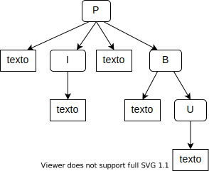

13 Tipos de ejercicios
Estás leyendo la segunda edición en progreso y en castellano de Enseñar Tecnología en Comunidad (Teaching Tech Together). Este capítulo está siendo objeto de una profunda reestructuración y puede resultar confuso o incompleto
Todo/a buen/a carpintero/a tiene un juego de destornilladores y todo/a buen/a docente tiene diferentes tipos de ejercicios para comprobar qué están aprendiendo realmente los/las estudiantes, para ayudarlos a practicar sus nuevas habilidades y para mantener su compromiso.
Este capítulo comienza describiendo varios tipos de ejercicios que se pueden usar para corroborar si tu forma de enseñar ha resultado efectiva.
Luego examina el estado del arte en cuanto a calificación automatizada y culmina explorando discusiones, proyectos y otros tipos importantes de trabajo que requieren una atención más humana para evaluar.
Nuestra discusión se basa parcialmente en el Banco de Preguntas de Canterbury [Canterbury Question Bank][canterbury-question-bank] Sanders et al. (2013), que trae entradas para varios lenguajes de programación y temas introductorios a las ciencias de la computación.
13.1 Los clásicos
Como se discute en la Section 3.1, las preguntas de opción múltiple son más efectivas cuando las respuestas incorrectas sondean conceptos erróneos específicos. Están diseñadas para evaluar los niveles más bajos en la Taxonomía de Bloom (Section 7.2), pero también requieren que los/las estudiantes utilicen su propio juicio.
13.1.1 Una pregunta de opción múltiple
¿En qué orden ocurren las operaciones cuando la computadora evalúa la expresión
precio = agregarImpuestos(costo - descuento)?
- resta, llamado a función, asignación
- llamado a función, resta, asignación
- llamado a función, luego asignación y resta simultáneamente
- ninguna de las anteriores
El segundo tipo de ejercicio clásico es programar y ejecutar, donde el/la estudiante escribe un código que produce una salida especificada. Los ejercicios de programar y ejecutar pueden ser tan simples o complejos como el/la docente quiera, pero cuando se usen en clase deben ser breves y tener solo una o dos respuestas correctas posibles. Generalmente es suficiente pedir a las personas principiantes que calculen e impriman un solo valor o que llamen a una función específica: docentes experimentados/as a menudo olvidan de lo difícil que puede ser averiguar qué parámetros van en qué lugar. Para los/las estudiantes más avanzados, averiguar qué función llamar es una actividad más atractiva y una mejor evaluación de su comprensión.
13.1.2 Programar y ejecutar
La variable
fotocontiene una imagen a todo color de un archivo. Usando una función, crea una versión blanco y negro de la imagen y asígnala a una variable nueva llamadamonocromo.
Los ejercicios de programar y ejecutar se pueden combinar con preguntas de opción múltiple. Por ejemplo, esta pregunta de opción múltiple sólo puede ser contestada ejecutando el comando Unix ls:
13.1.3 Combinar preguntas de opción múltiple con programar & ejecutar
Estás en el directorio
/home. ¿Cuál de los siguientes archivos no está en dicho directorio? 1.otonio.csv2.verano.csv3.primavera.csv4.invierno.csv
Los ejercicios de programar y ejecutar ayudan a las personas a practicar las habilidades que más quieren aprender, pero pueden ser difíciles de evaluar: puede haber muchas maneras inesperadas de obtener la respuesta correcta, y es desmoralizante si un sistema de calificación automática rechaza el código de la solución porque no se corresponde con el del docente. Una forma de reducir qué tanto ocurre esto es evaluar solo su producción, pero eso no les da una devolución sobre cómo están programando. Otra manera es darles un pequeño conjunto de evaluación en el que pueden ejecutar su código antes de enviarlo (y entonces el código se evalúa con un conjunto más amplio de pruebas). Hacer esto les ayuda a descubrir si han malinterpretado completamente la intención del ejercicio antes de hacer cualquier cosa que pueda afectarles la nota.
En lugar de escribir código que satisface algunas especificaciones, se les puede pedir a los/las estudiantes que escriban pruebas para determinar si un fragmento de código se ajusta a una especificación. Esta habilidad es útil por sí misma y practicarla puede darles a los/las estudiantes un poco más de simpatía por el trabajo duro de sus docentes.
13.1.4 Invirtiendo programar y ejecutar
La función
suma_monotonacalcula la suma de cada sección de una lista de números, en la que los valores aumentan estrictamente.Por ejemplo, dada la entrada
[1, 3, 3, 4, 5, 1], la salida es[4, 12, 1].Escribe y corre pruebas unitarias para determinar cuál de los siguientes errores está contenido en la función:
- Considera cada número negativo como el inicio de una nueva sub-secuencia.
- No incluye el primer valor de cada sub-secuencia en la sub-suma.
- No incluye el último valor de cada sub-secuencia en la sub-suma.
- Solo reinicia la suma cuando los valores decrecen en vez de aumentar.
Completar los espacios en blanco es un refinamiento de programar y ejecutar en el que el/la estudiante recibe el comienzo de un código y debe completarlo.
(En la práctica, la mayoría de los ejercicios programar y ejecutar son en realidad del tipo completar los espacios en blanco, porque el/la docente proporciona comentarios para recordarles a sus estudiantes los pasos que deben seguir). Las preguntas de este tipo son las bases para ejemplos desvanecidos; como se discute en el Chapter 5, las personas principiantes a menudo encuentran a este tipo de ejercicios menos intimidante que escribir todo el código desde cero; y dado que el/la docente ha proporcionado la mayor parte de la estructura de la respuesta, las respuestas enviadas son mucho más predecibles y, por lo tanto, más fáciles de revisar.
13.1.5 Completar los espacios en blanco
Completa los espacios en blanco, para que el código de abajo imprima el texto
'cana'.Inspirado en un verso de María Elena Walsh, del libro [Zoo Loco][zoo-loco].text = 'Un canario que ladra si está triste' slice = text[____:____] print(slice)
Los problemas de Parsons también evitan el problema de la “pantalla blanca del terror” a la vez que permite que los/las estudiantes se concentren en el flujo de control por separado del vocabulario Parsons and Haden (2006),Ericson et al. (2015),Morrison et al. (2016),Ericson, Margulieux, and Rick (2017).
Existen herramientas para construir y hacer problemas de Parsons en línea Ihantola and Karavirta (2011), pero pueden ser emuladas (aunque un poco torpemente) pidiendo a los/las estudiantes que reorganicen las líneas de código en un editor de texto.
13.1.6 Problemas de Parsons
Reorganiza e indenta estas líneas para obtener la suma de los valores positivos de una lista. (También deberás agregar dos “dos puntos” en los lugares apropiados)
total = 0 if v > 0 total += v for v in valores
Ten en cuenta que dar a los/las estudiantes más líneas de las que necesitan, o pedirles que reordenen algunas líneas y añadan algunas más, hace que los problemas de Parsons sean significativamente más difíciles Harms, Chen, and Kelleher (2016).
13.2 Seguir
Seguir la ejecución es la inversa de un problema de Parsons: dadas unas pocas líneas de código, los/las estudiantes tienen que rastrear el orden en que se ejecutan esas líneas.
Esta es una habilidad esencial de depuración y una buena manera de consolidar la comprensión de los/las estudiantes de los bucles, los condicionales y el orden de evaluación de las llamadas a funciones y métodos.
La forma más fácil de implementarlo es hacer que los/las estudiantes escriban una secuencia de pasos etiquetados. Hacer que elijan la secuencia correcta de un conjunto (es decir, presentarla como una pregunta de opción múltiple) añade carga cognitiva sin añadir valor, ya que tienen que hacer todo el trabajo de averiguar la secuencia correcta y luego buscarla en la lista de opciones.
13.2.1 Seguir el orden de ejecución
¿En qué orden se ejecutan las líneas etiquetadas en este bloque de código?
A) vals = [-1, 0, 1] B) suma_inversa = 0 try: for v in vals: C) suma_inversa += 1/v except: D) pass
Seguir los valores es similar a seguir la ejecución, pero en lugar de deletrear el orden en que se ejecuta el código, el/la estudiante enumera los valores que una o más variables toman a medida que se ejecuta el programa.
Una forma de implementar esto es dar a cada estudiante una tabla cuyas columnas estén etiquetadas con nombres de variables y cuyas filas estén etiquetadas con números de línea, y pedirles que completen los valores que las variables toman en dichas líneas.
13.2.2 Seguir los valores
¿Qué valores toman
izquierdayderechaa medida que este programa se ejecuta?A) izquierda = 23 B) derecha = 6 C) while derecha: D) izquierda, derecha = derecha, izquierda % derecha
Número de línea izquierdaderecha______________________________________________________
También puedes requerir que los/las estudiantes rastreen el código hacia atrás para averiguar cuál debe haber sido la entrada para que el código produzca un resultado determinado Armoni and Ginat (2008).
Estos problemas de ejecución inversa requieren razonamientos de búsqueda y deducción, y cuando la salida es un mensaje de error, contribuyen a que los/las estudiantes desarrollen habilidades valiosas de depuración.
13.2.3 Ejecución inversa
Rellena el número faltante en
valoresque causó que esta función se interrumpiera.valores = [ [1.0, -0.5], [3.0, 1.5], [2.5, ___] ] corridaTotal = 0.0 for (lectura, escalada) in valores: corridaTotal += lectura / escalada
Los ejercicios de ajuste mínimo también ayudan a desarrollar habilidades de depuración.
Dadas unas pocas líneas de código que contienen un error, el/la estudiante deben encontrarlo y hacer un pequeño cambio para arreglarlo.
El cambio puede hacerse usando programar y ejecutar, mientras que la identificación se puede hacer como una pregunta de opción múltiple.
13.2.4 Ajuste mínimo
Esta función se supone que prueba si un número se encuentra dentro de un rango. Realiza un pequeño cambio para que la función realmente lo haga.
def inside(punto, mas_bajo, mas_alto): if (punto <= mas_bajo): return false elif (punto <= mas_alto): return false else: return true
Los ejercicios de tema y variación son similares, pero se le pide al estudiante que haga una pequeña alteración que cambie la salida de alguna manera específica en lugar de realizar un cambio para corregir un error. Los cambios permitidos pueden incluir cambiar el valor inicial de una variable, reemplazar una llamada a una función por otra, intercambiar bucles internos y externos, o cambiar el orden de las pruebas en un condicional complejo.
De nuevo, este tipo de ejercicio da a los/las estudiantes la oportunidad de practicar una habilidad útil para el mundo real: la forma más rápida de producir el código que necesitan es ajustando un código que ya hace algo parecido.
13.2.5 Tema y variaciones
Cambia el bucle interno de la siguiente función para que llene el triángulo superior izquierdo de una imagen con un color especificado.
function llenarTriangulo(imagen, color) is for x := 1 to imagen.width do for y := 1 to imagen.height do imagen[x, y] = color end end end
Los ejercicios de modificación son el complemento de los ejercicios temáticos y de variación: dado un fragmento de código que funciona, el/la estudiante tiene que modificarlo de alguna manera sin cambiar la salida.
Por ejemplo, el/la estudiante puede reemplazar los bucles con expresiones vectorizadas o simplificar la condición en un bucle while.
Esta es también una habilidad útil para la vida real, pero a menudo hay tantas formas de modificar el código que la calificación requiere inspección humana.
13.2.6 Refactorizar
Escribir una sola compresión de lista que tenga el mismo efecto que este bucle.
resultado = [] for v in valores: if len(v) > rango: resultado.append(v)
13.3 Diagramas
Hacer que los estudiantes dibujen mapas conceptuales y otros diagramas brinda una idea de cómo están pensando (Section 4.1), pero los diagramas de forma libre requieren que una persona los evalúe (no pueden ser calificados automáticamente), por lo que consumen mucho tiempo.
Etiquetar los diagramas, por otra parte, es casi tan potente pedagógicamente pero mucho más fácil de escalar. En lugar de hacer que tus estudiantes creen diagramas desde cero, puedes entregarles un diagrama y un conjunto de etiquetas y hacer que coloquen las etiquetas en los lugares correctos. El diagrama puede ser una estructura de datos (“después de ejecutar este código, ¿qué variables apuntan a qué partes de esta estructura?”), un gráfico (“une con flechas cada uno de estos fragmentos de código con la parte del gráfico generado”), o el propio código (“haz coincidir cada término con un ejemplo de ese mismo elemento en el programa”).
13.3.1 Etiquetado de un diagrama
La ?fig-exercises-labeling muestra cómo un fragmento pequeño de HTML se representa en memoria. Coloca las etiquetas 1–9 sobre los elementos del árbol para mostrar el orden en el que se alcanzan en un recorrido en profundidad.
{fig-exercises-labeling, fig-alt = “Inicia con una caja con una letra P mayúscula, salen cuatro flechas, dos hacia dos cajas diferentes con la misma etiqueta:”texto”, otra hacia una caja con la letra I mayúscula y la última hacia una caja con la letra B mayúscula. Desde la caja de la letra B salen dos flechas, una hacia una caja etiquetada como “texto” y otra hacia una caja con la letra U mayúscula. Desde las letras I e U también salen flechas hacia diferentes cajas etiquetadas como “texto”.}
Otra forma de usar diagramas es dar a tus estudiantes las partes del diagrama y pedirles que las organicen correctamente.
Este es un equivalente visual a un problema de Parsons, y para ayudar con el etiquetado puedes proporcionar más o menos del esqueleto, de acuerdo a la dificultad para la que crees que están preparados/as.
Tengo buenas memorias de tratar de colocar resistencias y capacitores en un diagrama de circuito con el fin de obtener el voltaje correcto en un punto determinado, y he visto docentes que les dan a sus estudiantes un conjunto definido de bloques de Scratch y les piden que creen un diseño particular usando solo esos bloques.
Los problemas de correspondencia pueden pensarse como un caso especial de etiquetado en el que el “diagrama” es una columna de texto y las etiquetas se toman de la otra columna.
En la correspondencia uno-a-uno se le da a cada estudiante dos listas de igual longitud y se le pide que asocie los elementos correspondientes, p.ej. “asocia cada fragmento de código con la salida que produce”.
13.3.2 Correspondencia
Asocia cada operador de expresión regular en la ?fig-exercises-matching con lo que hace.
 {fig-exercises-matching fig-alt=“en el primer renglón llamado”Operador”, se presentan cajas con símbolos en el siguiente orden: signo de pregunta, asterisco, más, peso, potencia. En el segundo renglón llamado “Acción” hay cajas etiquetadas con el siguiente orden: inicio de línea, cero o uno, fin de línea, uno o más, cero o más.”}
{fig-exercises-matching fig-alt=“en el primer renglón llamado”Operador”, se presentan cajas con símbolos en el siguiente orden: signo de pregunta, asterisco, más, peso, potencia. En el segundo renglón llamado “Acción” hay cajas etiquetadas con el siguiente orden: inicio de línea, cero o uno, fin de línea, uno o más, cero o más.”}
Con la correspondencia de muchos a muchos las listas no tienen la misma longitud, por lo que algunos elementos pueden asociarse con varios y otros pueden no ser emparejados en absoluto.
Las correspondencias muchos-a-muchos son más difíciles porque los/las estudiantes no pueden hacer los apareamientos fáciles primero para reducir su espacio de búsqueda.
Los problemas de correspondencia pueden ser implementados en exámenes autocorregibles haciendo que los/las estudiantes/as envíen listas de ítems apareados (como “A3, B1, C2”), pero eso es burdo y propenso a errores.
Hacer que reconozcan un conjunto de pares correctos en preguntas de opción múltiple es aún peor, ya que es muy fácil de malinterpretar, lamentablemente.
Dibujar o arrastrar funciona mucho mejor, pero requiere más trabajo para implementarlo.
Ranking es un caso especial de emparejamiento que es (ligeramente) más fácil de responder a través de listas, ya que nuestras mentes son bastante buenas en la detección de errores o anomalías en las secuencias. Los criterios de ranking determinan el nivel de razonamiento requerido.
Si haces que tus estudiantes ordenen los algoritmos del más rápido al más lento, probablemente estés ejercitando la memoria (es decir, pidiéndoles que reconozcan los nombres de los algoritmos y que sepan sus propiedades), mientras que al pedirles que ordenen las soluciones de las más robustas a las más frágiles, ejercitas su razonamiento y juicio.
Resumir también requiere que los/las estudiantes utilicen un pensamiento de orden superior y les da la oportunidad de practicar una habilidad que es muy útil para informar sobre errores. Por ejemplo, les puedes preguntar a tus estudiantes: “¿Qué frase describe mejor cómo cambia la salida de f a medida que x varía de 0 a 10?” y luego darles varias opciones como una pregunta de opción múltiple.
También puedes pedir respuestas muy cortas de formato libre a preguntas en dominios restringidos, como por ejemplo, “¿Cuál es la característica clave para que un algoritmo de ordenamiento sea estable?” No podemos automatizar completamente la comprobación de las respuestas sin generar un número frustrante de falsos positivos (aceptando respuestas incorrectas) y falsos negativos (rechazando las correctas), pero las preguntas de este tipo se prestan bien a la clasificación por pares (?sec-individual-peer).
13.4 Calificación automática
Las herramientas automáticas de corrección de evaluaciones han existido desde antes que yo naciera: la primera mención publicada data de 1960 y las encuestas publicadas por Douce, Livingstone, and Orwell (2005),Ihantola et al. (2010) mencionan muchas herramientas específicas por su nombre.
Construir este tipo de herramientas es mucho más complejo de lo que podría parecer a primera vista.
¿Cómo se representan las tareas?
¿Cómo se realiza un seguimiento y se informan los envíos?
¿Pueden los/las estudiantes trabajar cooperativamente?
¿Cómo se pueden ejecutar los envíos de forma segura?
Edwards, Shams, and Estep (2014) es un artículo dedicado por completo a un esquema adaptativo para detectar y gestionar bucles infinitos de los envíos de código, y este es solo uno de las muchos problemas que surgen.
Cuando se habla de autocalificadores, es importante diferenciar la satisfacción de los/las estudiantes de los resultados del aprendizaje. Por ejemplo, Maguire, Maguire, and Kelly (2018) sustituyó los laboratorios informales de programación para un curso de Ciencias de la Computación de segundo año por una prueba semanal evaluada utilizando un calificador automático. A los/las estudiantes no les gustó el sistema automatizado, pero la tasa general de fracasos del curso se redujo a la mitad y se triplicó el número de estudiantes que obtuvieron calificaciones con honores. Por el contrario, Rubio-Sánchez et al. (2014) también comenzó a utilizar un autocalificador diseñado para competencias, pero no vio una disminución significativa en las tasas de deserción de sus estudiantes; una vez más, los/las estudiantes hicieron comentarios negativos sobre la herramienta, que los/las autores atribuyen a la calidad de los mensajes de retroalimentación más que a una aversión a la autocalificación.
Sridhara et al. (2016) adoptaron un enfoque diferente. Utilizaron fuzz testing (casos de prueba generados aleatoriamente) para comprobar si el código del estudiante realiza lo mismo que una implementación de referencia proporcionada por el/la docente. En el primer proyecto de un curso introductorio de 1400 estudiantes, el fuzz testing identificó errores que no habían sido detectados en un conjunto de casos de prueba escritos a mano para más del 48% de los/las estudiantes.
Basu et al. (2015) dio a sus estudiantes una serie de soluciones a casos de prueba, pero tenían que desbloquear cada caso respondiendo preguntas sobre su comportamiento esperado antes de que se les permitiera aplicarlo a la solución propuesta por ellos/as.
Por ejemplo, supongamos que los/las estudiantes tenían que escribir una función para encontrar el mayor par de números adyacentes en una lista. Antes de que se les permitiera usar las pruebas de la pregunta, tenían que elegir la respuesta correcta a: “¿Qué produce parMasGrande(4, 3, -1, 5, 3, 3)?”. En un curso universitario de 1300 personas, la gran mayoría de los/las estudiantes optaron por validar su comprensión de los casos de prueba de esta manera antes de intentar resolver los problemas, y así hicieron menos preguntas y expresaron menos confusión acerca de las tareas.
13.4.1 En contra de las herramientas “listas para usar” disponibles en el mercado
Es tentador calificar el código de los/las estudiantes con herramientas de revisión de estilo disponibles y de acceso sencillo. Sin embargo, Nutbrown and Higgins (2016) inicialmente no encontraron correlación entre las calificaciones proporcionadas por personas y las violaciones a las reglas del corrector de estilo. A veces esto se debía a que los/las estudiantes violaban una regla muchas veces (perdiendo así más puntos de los que deberían haber perdido), pero otras veces se debía a que enviaban el código de inicio de tarea con pocas alteraciones y de esa manera obtenían más puntos de los que deberían haber obtenido.
Incluso las herramientas construidas específicamente para enseñar pueden quedar por debajo de las necesidades de los/las docentes. Keuning, Jeuring, and Heeren (2016a),Keuning, Jeuring, and Heeren (2016b) observaron los mensajes producidos por 69 herramientas de calificación automática. Encontraron que estas herramientas a menudo no dan retroalimentación sobre cómo solucionar problemas y dar el siguiente paso. También encontraron que la mayoría de los/las docentes no pueden adaptar fácilmente la mayoría de las herramientas a sus necesidades: como muchas herramientas de flujo de trabajo, tienden a hacer cumplir los supuestos no reconocidos de sus creadores sobre cómo funcionan las instituciones. Tu esquema de clasificación es una buena lista de requisitos para chequear cuando se examinan herramientas de este tipo.
Buffardi and Edwards (2015) presenta una reflexión bien documentada sobre la idea de proporcionar una retroalimentación automatizada. Su punto de partida es que, “Los sistemas de calificación automatizados ayudan a los/las estudiantes a identificar errores en su código, [pero] pueden inadvertidamente disuadir a los/las estudiantes de pensar críticamente y probar a fondo y, en cambio, fomentan dependencia con las pruebas del docente”. Una de las cuestiones clave que identificaron es que un/una estudiante puede probar a fondo su código, pero es posible que la característica aún no se implemente de acuerdo con las especificaciones del docente. En este caso, el “fallo” no es causado por la falta de pruebas sino por un malentendido de los requisitos, y es poco probable que más pruebas expongan el problema.
Si el sistema de calificación automática no proporciona una retroalimentación que brinde una mejor comprensión y aplicación de los conocimientos, esta experiencia sólo frustrará al estudiante. Con el fin de proporcionar esa retroalimentación, el sistema de Buffardi and Edwards (2015) identifica qué métodos en el código del estudiante se ejecutan mediante pruebas fallidas para que el sistema pueda asociar pruebas fallidas con características particulares de lo que envió el/la estudiante. El sistema decide si se han “ganado” ayudas específicas viendo si el/la estudiante ha probado la característica asociada lo suficiente, para evitar que los/las estudiantes se apoyen en las ayudas en vez de realizar las pruebas. En Sridhara et al. (2016) se describen otros enfoques para compartir la retroalimentación con los/las estudiantes cuando se prueba automáticamente su código. Lo primero es proporcionar la salida esperada para las pruebas—pero luego los/las estudiantes generan la salida conocida incrustando el dato directamente en el código fuente del programa Esta práctica se conoce como hardcodear y dejandola fija para esas entradas (porque todo lo que pueda manipularse se hará).
Lo segundo es informar los resultados de la aprobación o rechazo del código de los/las estudiantes, pero suministrando las entradas y salidas reales de las pruebas solo después de la fecha de envío. Sin embargo, es frustante decirles a los/las estudiantes que se han equivocado pero no decirles por qué. Una tercera opción es utilizar una técnica llamada hashing para generar un valor que depende de la salida pero sin revelarla.
Si el/la usuario/a produce exactamente el resultado correcto entonces su hash desbloqueará la solución, pero es imposible hacer el camino inverso a partir del hash para averiguar cuál se supone que es la salida.
El hashing requiere más trabajo y explicación para configurarlo, pero logra un buen balance entre revelar respuestas prematuramente y no revelarlas cuando podría ser de ayuda.
13.5 Razonamientos de alto nivel
Muchos tipos de ejercicios de programación son difíciles de evaluar por los/las docentes en una clase con más de un puñado de estudiantes y son igualmente difíciles de evaluar mediante plataformas automatizadas. Las clases van desarrollándose con vistas a proyectos de programación mayores (si todo va bien), pero la única manera de dar retroalimentación es caso por caso. La revisión de código también es, en general, difícil de calificar automáticamente, pero puede ser abordada si se proporciona a los/las estudiantes una lista de fallos a buscar y se les pide que comparen comentarios con líneas de código concretas.
Por ejemplo, se le puede decir a un/a estudiante que hay dos errores de indentación y un nombre de variable incorrecto y se le puede pedir que los señale.
Si son estudiantes/as más avanzados/as, se les podría dar media docena de tipos de comentarios que podrían hacerse sobre el código sin que se les diga cuántos de cada tipo deberían encontrar.
Stegeman, Barendsen, and Smetsers (2016) es un buen punto de partida para una rúbrica de estilo de código, mientras que Luxton-Reilly (2009) muestra la revisión por pares en las clases de programación de manera más general.
Si se pide a los/las estudiantes que hagan revisiones, hay que usar la revisión por pares calibrada (?sec-individual-peer) para que tengan modelos de cómo debería ser una buena retroalimentación.
13.5.1 Revisión de código
Marca los problemas en cada línea de código usando la rúbrica proporcionada.
01) def addem(f): 02) x1 = open(f).readlines() 03) x2 = [x for x in x1 if x.strip()] 04) changes = 0 05) for v in x2: 06) print('total', total) 07) tot = tot + int(v) 08) print('total')
- nombre de la variable incorrecto
- uso de variable indefinida
- falta el valor de salida
- variable no usada
13.6 Ejercicios
13.6.1 Programar y ejecutar (parejas/10’)
Crea un ejercicio corto de programa y ejecuta, luego intercambia con tu pareja y analiza cuánto tiempo les toma a cada uno de ustedes entender y hacer el ejercicio del otro/a.
¿Hubo alguna ambigüedad o malentendido en la descripción del ejercicio?
13.6.2 Invertir el código y la ejecución (grupos pequeños/15’)
Forma grupos de 4 a 6 personas. Haz que cada integrante del grupo cree un ejercicio de programar y ejecutar invertido: el ejercicio debe requerir que las personas averigüen qué entrada produce una salida en particular. Elige dos ejercicios al azar y mira cuántas entradas diferentes que satisfagan los requisitos puede encontrar el grupo.
13.6.3 Siguiendo valores (parejas/10’)
Escribe un programa corto (10-15 líneas), intercambia con tu pareja y sigue cómo las variables del programa cambian de valor con el tiempo. ¿Qué diferencias hay en la forma en que tú y tu pareja escribieron sus seguimientos?
13.6.4 Refactorizar (grupos pequeños/15’)
La clase trabaja en grupos de 3-4 personas.
En cada grupo, cada persona selecciona un fragmento corto de código (10–30 líneas de largo) que haya escrito y que no sea tan ordenado como podría ser. Luego, el/la docente elige un/a estudiante al azar por grupo: todas las personas de la clase ordenan su código independientemente.
¿En qué se diferencian las versiones limpias? ¿Qué tan bien o que tan mal podrían acomodarse todas estas variaciones si se calificara automáticamente, o en una clase grande?
13.6.5 Rotulando un diagrama (parejas/10’)
Dibuja un diagrama mostrando algo que se ha explicado recientemente: cómo los navegadores obtienen datos de los servidores, la relación entre los objetos y las clases, o cómo se indexan los dataframes en R.
Pon las etiquetas en el lateral y pídele a tu pareja que las asigne a cada elemento del diagrama.
13.6.6 Acertijos de lápiz y papel (toda la clase/15’)
Butler, Bezakova, and Fluet (2017) describe un conjunto de rompecabezas de lápiz y papel que pueden convertirse en asignaciones de programación introductorias, señalando que estas tareas son disfrutadas por los/las estudiantes y que fomentan la metacognición. Piensa en un simple rompecabezas de lápiz y papel al que jugabas en tu niñez y describe cómo lo convertirías en un ejercicio de programación.
13.6.7 Contando fallos (parejas/15’)
Cualquier estimación útil de cuánto tiempo se necesita para resolver un ejercicio debe considerar cuán frecuentes son los fallos y cuánto tiempo se pierde con ellos. Por ejemplo, editar archivos de texto parece una tarea sencilla, pero ¿qué pasa con la búsqueda de esos archivos? La mayoría de los editores que usan interfase gráfica guardan archivos en el escritorio o en el directorio personal del usuario/a; si los archivos utilizados en un curso se almacenan en otro lugar, una proporción importante de los/las estudiantes no podrá navegar al directorio correcto sin ayuda. (Si esto te parece un problema menor, por favor vuelve a visitar la discusión del punto ciego de las personas expertas en el Chapter 4.)
Trabajando con tu pareja, haz una lista de las cosas “simples” que has notado que salen mal en los ejercicios que has usado o tomado.
¿Con qué frecuencia aparecen?
¿Cuánto tiempo tardan los estudiantes en arreglarse por su cuenta o con ayuda?
¿Cuánto tiempo de clase asignas actualmente para lidiar con estos problemas?
13.6.8 Hablando de tiempo (individual/10’)
¿Qué tan precisas han sido las estimaciones de tiempo de los ejercicios de este libro hasta ahora?